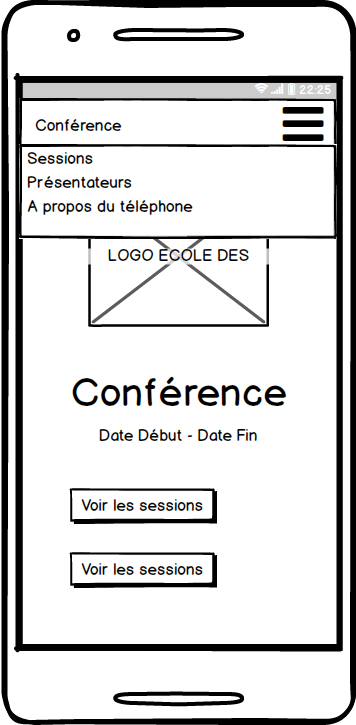

Workshop TypeScript

- Version en ligne : http://www.dev-institut.fr/workshop-typescript
Contexte
(en cours de rédaction)
Objectif
L'objectif de ce TP est de construire une application permettant de visualiser les données d'une conférence (BreizhCamp 2018).

Une erreur s'est glissée dans la maquette : il manque le bouton Voir les présentateurs.
Cette construction se fera par la mise en place de techniques souvent utilisées par les frameworks Web :
- Templating
- Routeur
- Consommation d'API REST
- Stockage local
- ...
Un mot sur l'auteur
 |
Rossi Oddet est fondateur de Dev Institut, organisme de formation professionnelle de développeurs. Il co-organise également des formations Data à travers l'initiative ML Week. |
| Contact | rossi.oddet@dev-institut.fr |